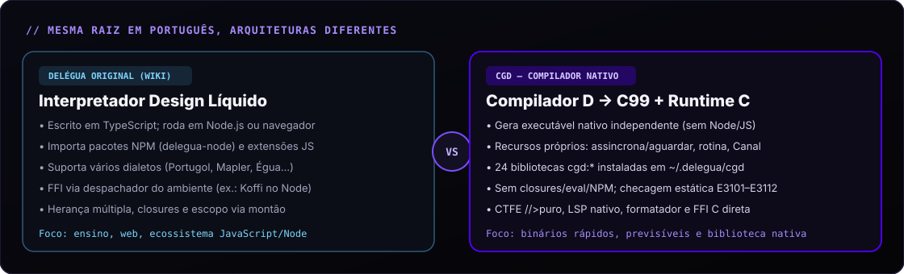
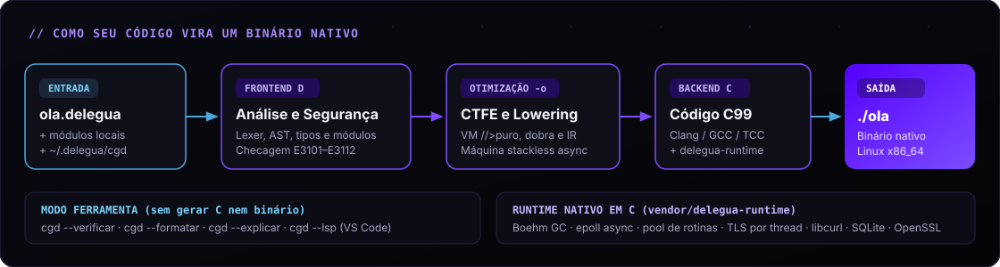
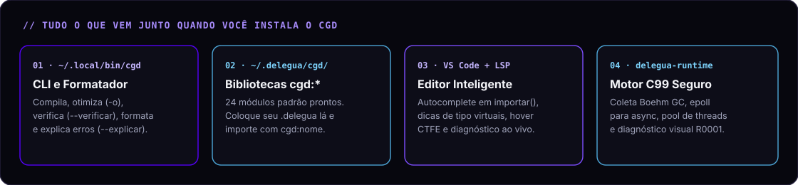

Binário nativo de verdade
Seu código vira C99 limpo e é compilado com Clang ou GCC, ligado ao runtime em C com coletor Boehm GC.
O CGD pega a sintaxe em português de Delégua e gera um programa nativo de verdade, sem precisar de Node.js ou interpretador na hora de rodar. Vem com verificação de erros antes da execução, assincronismo, rotinas paralelas, 24 bibliotecas prontas e extensão para VS Code.
Licença Apache-2.0 · Frontend em D (DMD/LDC2) · Runtime C99 + Boehm GC
const JSON: qualquer = importar("cgd:json").JSON
classe Pessoa {
nome: texto
construtor(nome: texto) { isto.nome = nome }
saudar(): texto { retorna "Olá, ${isto.nome}!" }
}
const dados: dicionario = JSON.analisar('{"nome":"Delégua"}')
escreva(Pessoa(dados["nome"]).saudar())$ cgd ola.delegua -o -s ola
Análise → Segurança E31xx → CTFE → C99 → binário nativo
$ ./ola
Olá, Delégua!
$ ▌
Seu código vira C99 limpo e é compilado com Clang ou GCC, ligado ao runtime em C com coletor Boehm GC.
Divisão por zero, membro inexistente, índice fora do limite e mutação de tupla são pegos ainda na compilação, com sugestão de correção.
Instaladas em ~/.delegua/cgd: servidor HTTP, SQLite, JSON, criptografia,
sockets, processos e assincronismo sem pacotes externos.
Extensão VS Code com autocomplete em importar("cgd:"), dicas virtuais de
tipo, prévia de funções puras e formatador próprio.
Hoje o CGD é testado e validado em Linux x86_64. Você só precisa de um compilador D (LDC2 ou DMD), um compilador C (Clang ou GCC), Git, DUB, Boehm GC e libcurl. Siga os três blocos abaixo em ordem.
sudo apt-get update
sudo apt-get install git build-essential clang pkg-config libgc-dev libcurl4-openssl-dev ldc dub python3
Prefere usar DMD? Baixe nos
downloads oficiais da linguagem D. Para usar cgd:cripto, cgd:compressao e
cgd:sqlite, o sistema usa as bibliotecas compartilhadas padrão
(OpenSSL, zlib e SQLite3).
git clone --branch dev --recurse-submodules https://github.com/FernandoTheDev/cgd.git
cd cgd
./build-runtime
dub build --compiler=ldc2 --build=release
# Se preferir DMD:
dub build --compiler=dmd --build=release
O runtime em C vive no submódulo vendor/delegua-runtime. Por isso a
opção --recurse-submodules é importante: ela já traz tudo pronto para o
./build-runtime.
O script ./instalar coloca o binário em ~/.local/bin/cgd,
o runtime em ~/.local/share/cgd e todas as bibliotecas padrão em
~/.delegua/cgd.
Depois disso você pode chamar cgd de qualquer pasta — e se quiser criar
uma biblioteca reutilizável, basta salvar um arquivo .delegua dentro de
~/.delegua/cgd e usar importar("cgd:seu_arquivo").
./instalar --no-build
export PATH="$HOME/.local/bin:$PATH"
# Opcional: extensão VS Code (LSP + cores + formatador)
npm ci --prefix extensao-vscode --ignore-scripts
python3 scripts/instalar_extensao.py --associate
# Teste agora:
cgd ola.delegua -o -s ola && ./ola
Dica rápida para não confundir: -o liga as otimizações do
CGD e -O2 no compilador C. Quem escolhe o nome do arquivo de saída é
-s caminho (de saída).
| Comando / opção | Para que serve no dia a dia |
|---|---|
cgd app.delegua -s app |
Compila e gera o executável ./app. |
-o / --otimizar |
Ativa otimizações, CTFE (@puro) e -O2 em C. |
--verificar |
Checa sintaxe, tipos e erros estáticos sem gerar binário nem chamar Clang/GCC. |
--formatar arquivo.delegua |
Formata o código com 4 espaços preservando strings, interpolações e comentários. |
--explicar E3109 |
Mostra a explicação detalhada de qualquer código de erro ou aviso do CGD. |
--emitir-c |
Gera somente o código C99 para você inspecionar, sem vincular o binário. |
--diagnosticos=json |
Emite erros e avisos em JSON Lines no stderr para scripts/CI.
|
--lsp |
Inicia o servidor de linguagem local (usado automaticamente pela extensão VS Code). |
CC=gcc / --target |
Permite trocar o compilador C ou preparar compilação cruzada com runtime próprio. |
Delégua foi criada pela
Design Líquido
como uma linguagem em português acessível para aprender e construir projetos, rodando
originalmente sobre um interpretador em TypeScript (delegua-node e
delegua-web). O CGD respeita essa origem, preserva a autoria e a licença
Apache-2.0, mas não é uma cópia do interpretador: muita coisa aqui foi
repensada ou construída do zero para o mundo compilado.

~/.delegua/cgd.
Documentado na wiki oficial de Delégua. Pensado para funcionar em Node.js e no navegador, com foco didático e integração direta ao ecossistema JavaScript.
delegua-node e bibliotecas JS.tendo ... como com finalizar() e pilha com
montão.
Recursos desenhados do zero neste projeto — não existem na especificação original do
interpretador e usam o runtime próprio em C (delegua-runtime):
assincrona,
aguardar, Promessa<T>, combinadores e reactor
epoll.
rotina,
Tarefa<T>, Canal e GrupoTarefas com
pool de threads e isolamento por thread.
cgd:* em ~/.delegua/cgd: 24
módulos prontos (servidor HTTP, SQLite, Cripto, Sockets, Processos, Bytes...).
@puro na compilação e diagnósticos
E3101–E3112.
destruir(), LSP e formatador:
ferramentas completas sem depender de Node ou JS.
| Assunto | Na wiki oficial de Delégua | No CGD (como funciona aqui) |
|---|---|---|
| Execução e memória | Interpretador JS/TS com pilha de escopos e montão. | Código C99 compilado + runtime nativo C com coletor Boehm GC. |
| Importação de bibliotecas | Pacotes NPM (delegua-node) ou registro manual na web. |
Caminhos literais .delegua e
importar("cgd:nome") resolvido direto de
~/.delegua/cgd.
|
| Funções internas e escopo | Permite acessar variáveis externas (closures). | Sem captura implícita (upvalues): passe dados por parâmetro ou método de objeto. |
| Herança e composição | Herança múltipla + composição mescla + interfaces. |
Herança simples (herda) + composição mescla +
múltiplas interfaces (implementa).
|
| Ciclo de vida / limpeza | tendo ... como chamando finalizar(). |
tente / finalmente e destrutores explícitos
destrutor() chamados via destruir(obj).
|
FFI (classe estrangeira) |
Despachador dinâmico (Koffi / classes TS do host). |
Ligação C estática via @definicao (ABI C escalar ou ABI gerenciada
delegua).
|
| Concorrência e threads | Não há rotina ou Canal na wiki base. |
Nativo do CGD: assincrona/aguardar (epoll) e
rotina/Tarefa<T>/Canal.
|
O CGD não esconde mágica nem embute um interpretador no seu binário. Se quiser ver o
resultado intermediário, rode cgd programa.delegua --emitir-c e leia o C99
gerado.

${...} e parser com recuperação de
erros.
~/.delegua/cgd, valida tipos, visibilidade e erros
E3101–E3112.
-o com VM @puro e máquina de estados para
assincrona.
delegua-runtime e Boehm
GC.
Mesmo sem -o, o compilador pega divisão por zero, overflow de 64 bits,
índices inválidos, membros inexistentes (E3109), mutação de texto/tupla
(E3110) e chamadas em nulo (E3111). Dentro de
tente/pegue, vira aviso W31xx para não quebrar testes de
erro propositais.
Quando um erro escapa em execução (R0001), o runtime mostra arquivo,
linha, coluna e a linha do código sublinhada — sem gastar chamadas de debug no
caminho normal, usando uma tabela estática no C gerado.
Quer aprender do zero com explicações passo a passo? Abra o livro do CGD ou use o guia de referência em página única.
| Área | O que funciona no CGD | Onde ver |
|---|---|---|
| Tipos e variáveis |
nulo, lógicos, inteiros 64-bit, reais, textos UTF-8, inferência,
constantes e defaults previsíveis.
|
valores → |
| Controle de fluxo |
se/senao, ternário ? :, coalescência ?:,
escolha/caso, laços e laços coletores.
|
controle → |
| Funções e arrows |
Funções nomeadas, anônimas e => sem captura, parâmetros
opcionais, ...spread e callbacks.
|
funções → |
| Assincronismo e rotinas |
assincrona, aguardar, Promessa<T>,
rotina, Tarefa<T>, Canal e
GrupoTarefas.
|
rotinas → |
| Coleções |
Vetores tipados T[], tuplas imutáveis, dicionários, compreensão de
listas, desestruturação e fatias [::-1].
|
vetores → |
| Texto e Unicode |
UTF-8 por pontos de código, interpolação ${...}, escapes e métodos
como dividir, substituir e aparar.
|
texto → |
| Classes, herança e mescla |
Construtores, herda, composição mescla, interfaces
implementa, classes abstratas, campos e métodos
estatico.
|
classes → |
| Privacidade, acessores e enums |
Blocos publico, privado e protegido,
obter/definir, destrutor e enum numérico.
|
contratos → |
| Exceções |
tente, pegue tipado, finalmente,
falhar e subclasses de Excecao.
|
exceções → |
| Módulos e ~/.delegua/cgd |
Importação literal de .delegua locais e resolução dinâmica de
importar("cgd:nome") a partir de ~/.delegua/cgd.
|
módulos → |
| Decoradores, CTFE e FFI C |
Metadados @nome, envelopes em funções e métodos, funções e métodos
estáticos @puro e classe estrangeira com
@definicao.
|
metadados → |
Nenhum recurso bateu com a busca. Tente outro termo ou abra o livro completo.
Em vez de uma lista fixa dentro do compilador, o CGD instala as bibliotecas padrão em
~/.delegua/cgd. Quando você digita importar("cgd: no VS Code,
o LSP lê essa pasta na hora e sugere tanto as bibliotecas oficiais quanto qualquer
módulo .delegua que você mesmo colocar lá.

Clientes HTTP, servidor HTTP/1.1 concorrente sobre epoll, sockets TCP e
UDP, DNS e canais para rotinas paralelas.
cgd:servidorcgd:redecgd:socketscgd:assincronoParser JSON puro, SQLite parametrizado com transações, buffers binários, OpenSSL e compressão gzip/deflate com limite de memória.
cgd:jsoncgd:sqlitecgd:bytescgd:criptocgd:compressaocgd:arquivos
Subprocessos, ambiente, calendário DataHora, argumentos de linha de
comando, logs, matemática, estatística e textos.
cgd:processocgd:ambientecgd:sistemacgd:tempocgd:iocgd:clicgd:logcgd:caminhoscgd:textoscgd:colecoescgd:matematicacgd:estatisticacgd:algoritmoscgd:nativo
Todos os 136 exemplos do repositório são compilados e executados com e sem
-o nos testes automáticos. Aqui estão quatro pontos de partida para você
copiar e testar.
classe Etiquetavel {
prefixo: texto = "CGD:"
rotulo(nome: texto): texto { retorna "${isto.prefixo} ${nome}" }
}
classe Pessoa mescla Etiquetavel {
estatico criadas: inteiro = 0
nome: texto
construtor(nome: texto) {
isto.nome = nome
Pessoa.criadas++
}
}
const p: Pessoa = Pessoa("Ana")
escreva(p.rotulo(p.nome), " | total:", Pessoa.criadas)funcao dividir(a: numero, b: numero): numero {
se b == 0 {
falhar "Não dá para dividir por zero"
}
retorna a / b
}
tente {
escreva(dividir(10, 0))
} pegue (erro: Excecao) {
escreva("Capturado: ${erro.mensagem}")
} finalmente {
escreva("Sempre executa na saída")
}funcao fib(n: inteiro): inteiro {
se n <= 1 { retorna n }
retorna fib(n - 1) + fib(n - 2)
}
assincrona funcao principal(): vazio {
// Roda em threads do pool com isolamento seguro
const t1: Tarefa<inteiro> = rotina fib(12)
const t2: Tarefa<inteiro> = rotina fib(14)
escreva(aguardar t1, " e ", aguardar t2)
}
principal()const HTTP: qualquer = importar("cgd:servidor").HTTP
funcao saudar(req: qualquer, res: qualquer): qualquer {
const nome: texto = req.parametro("nome", "mundo")
retorna res.json({ mensagem: "Olá, ${nome}!" })
}
const app: qualquer = HTTP()
app.obter("/ola/:nome", saudar)
app.escutar("127.0.0.1", 8080)Algumas coisas o CGD recusa de propósito para manter o código previsível e seguro. Outras ainda estão em evolução e a gente deixa isso bem visível aqui.
Uma função interna não puxa variáveis de fora silenciosamente. Isso evita estados escondidos e referências penduradas. Passe o valor por parâmetro ou use um método de classe.
funcao criar(valor: inteiro) {
retorna funcao() {
retorna valor // erro E4001: captura bloqueada
}
}
importar(...) exige texto literal conhecido na compilação — nada de
montar nome de arquivo em runtime nem baixar pacotes NPM. Em cgd:,
tentativas de travessia como cgd:../segredo são barradas com
E2003.
Sobre FFI C: classe estrangeira com
@definicao é permitida de forma explícita para chamar bibliotecas C
confiáveis, mas não funciona como sandbox — se a assinatura C estiver errada, o
código nativo pode falhar.
rotina só transfere valores
seguros (nulo, lógico, inteiro, real, texto copiado) — coleções
mutáveis não atravessam threads. Classes locais dentro de funções
assincrona ainda recebem E3305.
Todo recurso novo vem acompanhado de testes unitários em D, suítes de integração, sanitizadores (ASan/UBSan/TSan) e contratos em cada exemplo.
dub test --compiler=dmd --config=unittest
dub test --compiler=ldc2 --config=unittest
python3 testes/integracao.py
python3 testes/exemplos.py
python3 testes/formatador.py
python3 testes/lsp.py
python3 scripts/validar.py